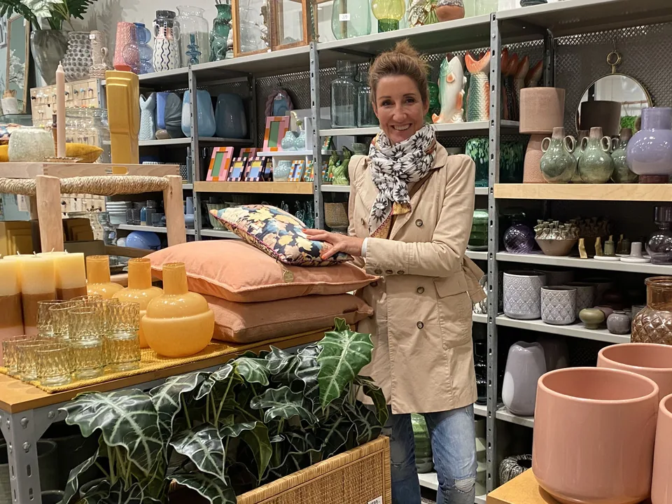

Soforthilfe
Wenn Sie beim Einrichten nicht weiterkommen, Ideen fehlen oder Fehlkäufe vermieden werden sollen.
Details ansehenWohn- und Einrichtungsberatung · Thalwil
Ihre Wohn- und Geschäftsräume sollen sich wieder stimmig, leicht und persönlich anfühlen. Ich unterstütze Sie mit frischen Ideen, Gefühl für Farben und einem klaren Blick für das, was wirklich zu Ihnen passt.
Seit über 17 Jahren in der deutschsprachigen Schweiz unterwegs. Unabhängig von Marken, Geschäften und Händlern - vom schnellen Termin bis zum kompletten Gesamtkonzept.
Philosophie
Oft reicht schon ein zweistündiger Beratungstermin, um ein Raumgefühl total ins Positive zu verwandeln. Stil entsteht durch die Freude und Bereitschaft, Zeit in die Suche nach passenden Möbeln, Materialien und Accessoires zu investieren.
Egal ob ein Zimmer oder ein ganzes Haus, IKEA oder B&B Italia, bunt oder uni, modern, vintage, skandi, industrial oder ein ganz anderer Stil: Ich freue mich über jede Herausforderung.

Angebote
Die wichtigsten Angebote im Überblick. Jedes Angebot führt auf eine eigene Detailseite, damit alle Informationen aus der bisherigen Website erhalten bleiben.
Wenn Sie beim Einrichten nicht weiterkommen, Ideen fehlen oder Fehlkäufe vermieden werden sollen.
Details ansehen
Gemeinsam einkaufen, sicherer entscheiden und genau das finden, was wirklich passt.
Details ansehen
Für Kundinnen und Kunden, die ein stimmiges Ganzes möchten und den Weg dahin lieber abgeben.
Details ansehen
Ein Umzug wird leichter, wenn Möbel, Farben und fehlende Stücke früh durchdacht sind.
Details ansehen
Frühe Entscheidungen bei Umbau oder Neubau bekommen einen gesamtheitlichen Blick.
Details ansehen
Farben stimmig wählen und Räume oder Lieblingsstücke zum Strahlen bringen.
Details ansehen
Vom Chaos zur Klarheit - mit Ordnung, Stauraum und neuer Leichtigkeit.
Details ansehenReferenzen
Die Projekte zeigen, wie unterschiedlich Wohnberatung sein kann: kurze Entscheidungshilfe, komplette Einrichtung, Farbkonzept, Umzug oder Business-Raum.
Gesamtkonzept
3.5-Zimmer-Wohnung, komplett neue Einrichtung für einen Kunden aus dem Ausland: Möbel, Teppiche, Licht, Vorhänge, Bilder, Accessoires und saisonale Dekoration.
Farbberatung und Einzug
Entscheidungshilfe zum Bodenbelag, Farbberatung, kleinere Umbauvorschläge vor dem Einzug und spätere Begleitung für Wintergarten und Outdoor-Möblierung.
Business-Raum
Ein Studio für ganzheitliche Gesundheit, Fitness und Wohlfühlbefinden sollte im Innendesign sichtbar werden - funktional, budgetbewusst und passend zur Corporate Identity.
Soforthilfe
Wohn- und Essbereich sowie später weitere Räume: Farben, Möbel, Lampen, Vorhänge, Stauraum und konkrete Umsetzungsideen mit kleinem Budget.
Einblicke
Ein paar visuelle Eindrücke aus bestehenden Projekten, Presse und Inspirationen.
Nächster Schritt
Schreiben Sie mir kurz, worum es geht. Gemeinsam klären wir schnell, welche Art von Beratung passt.